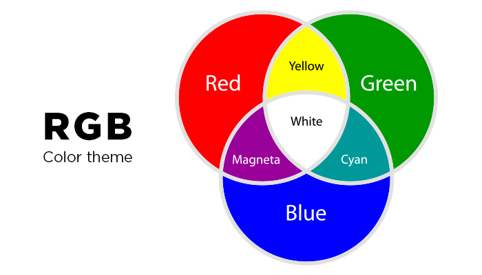
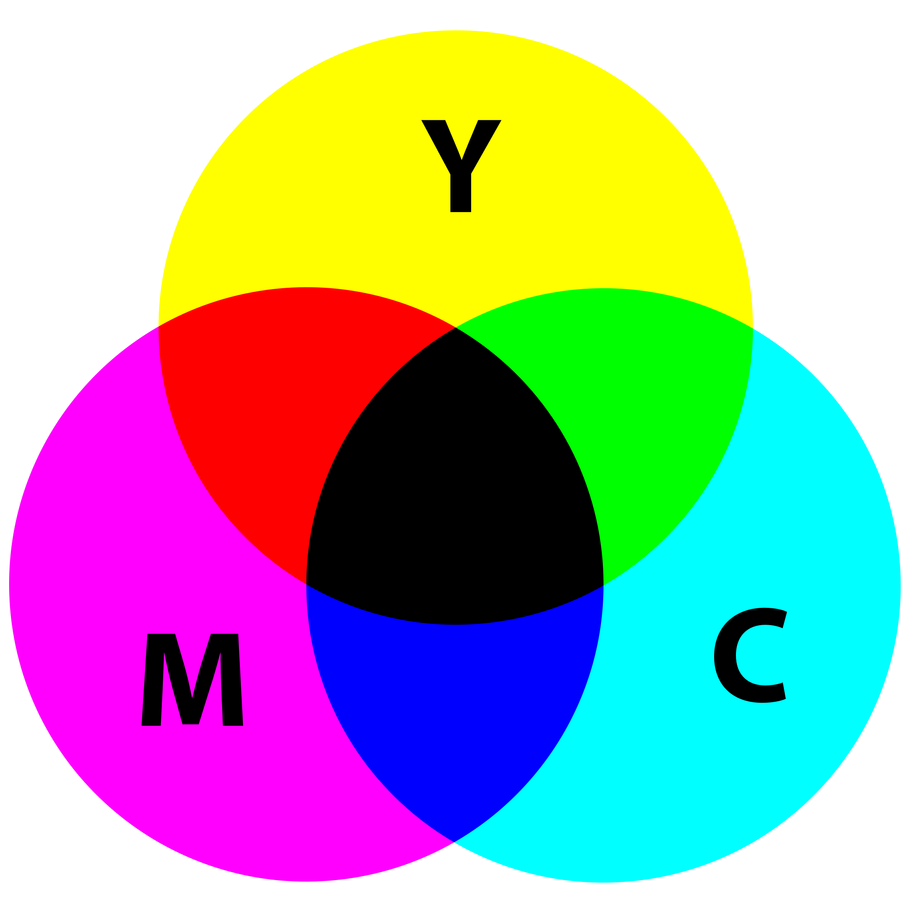

Scroll naar beneden voor: 'Kleurmodellen'
Cijfer
Dat was het dan, mijn eigen github site. Het is alweer een tijdje geleden sinds de laatste aanpassing, en dan klopt! In havo 5 kom ik weer terug naar deze site en dan zeg ik tegen mezelf: "man, wat slecht!". Voor nu heb ik deze site afgerond met ongeveer een 7,5.
Kleurmodellen
Ontdek kleurmodellen! Pixels vormen de bouwstenen van digitale beelden. RGB (rood, groen, blauw) geeft leven aan schermen, terwijl YMC (geel, magenta, cyaan) perfect is voor drukwerk. Duik in de wereld van kleuren en maak beelden sprankelend!
Binair stelsel
Ontdek het binaire stelsel! Met slechts 0's en 1's vormt het de basis van digitale technologie. ASCII zet deze cijfers om naar letters, zodat computers met ons kunnen communiceren. Klik hier en ontdek hoe dit systeem onze wereld verandert!
Compressie
Verken het geheim van compressie! Of het nu gaat om afbeeldingen of geluidsfragmenten, compressie verkleint bestanden zonder veel kwaliteit te verliezen. Dit bespaart ruimte en versnelt downloads. Klik hier en ontdek hoe compressie de digitale wereld efficiënter maakt!
Bitmap- en vectorafbeeldingen
Ontdek bitmap- en vectorafbeeldingen! Bitmapafbeeldingen bestaan uit pixels en zijn ideaal voor foto's, terwijl vectorafbeeldingen werken met lijnen en vormen, perfect voor logo's en illustraties. Elk type heeft zijn eigen kracht. Klik hier en leer hoe ze de digitale wereld vormen!
Andere Sites
Genoeg gehad van onze eigen site? Check ook sites uit mijn klas! Dezelfde onderwerpen maar ook dezelfde fun. Klik hier beneden om meer dan 5 sites te ontdekken!
Over Mij
De homepagina van deze site, dé plek waar je van alles en nog wat over mij te weten komt. Ontdek waar ik werk, waar ik op school zit en wat er zo uniek aan mij is.
Algemene Informatie
Hoe weet de computer dat jij een toets indrukt? Hoe zorgt het ervoor dat de toets iets met de computer doet? Leer hoe input, output, process en storage de digitale wereld veranderen!9!
Zonder Opmaak
Persoonlijk heb ik altijd al willen weten hoe mijn site eruit zou zien zonder opmaak. Hier kan je het zien! Het is de homepagina maar dan zonder style.css. Geniet ervan!
Kleurmodellen
In je computer zijn niet alleen letters, maar ook kleuren gecodeerd. Achter de lens van je telefoon zit een 'CDD' (charge-coupled device). Dit bestaat uit miljoenen lichtgevoelige fotocellen. Als je een foto maakt neemt het een momentopname van het invallende licht, de sensoren zetten dit om in een elektrisch signaal.
Zo een afbeelding bestaat uit pixels, het woord 'pixel' is een samenstelling van twee woorden: 'picture' en 'element'. Om het invallende licht te kunnen opslaan in pixels heb je kleurmodellen nodig, de twee belangrijkste kleurmodellen zijn het RGB-model en het CMY-model. Het RGB-model wordt gebruikt om kleuren weer te geven en het CMY-model om te printen.
RGB-model
Je computer, telefoon of televisie bestaan allemaal uit puntjes. Deze puntjes zijn pixels (zie afbeelding hieronder). Deze pixels bestaan rode, groende en blauwe lampjes. Elke pixel bestaat uit die drie kleuren lampjes. Deze lampjes kan je helderder en zwakker laten branden, hierdoor kan je vershcillende kleuren weergeven op het beeldscherm.
Als je verschillende kleuren verf mengt, kun je heel veel kleuren maken. Door bijvoorbeeld rood en groen te mengen, krijg je geel. Een kleurmodel gebruikt dit mengen ook om kleuren weer te geven. Het RGB-model bestaat uit drie kleuren: rood, groen en blauw. Dit zijn ookwel de kleuren van de lampjes in pixels. Deze drie kleuren zijn de basis voor ALLE kleuren.
de kleuren die met mengen bij het RGB-model ontstaan, zijn anders dan bij eht mengen van verf. Het RGB-model is namenlijk gebaseerd op een zwarte achtergrond, als het beeldscherm uistaat, is het zwart. De lampjes staan dan ook uit. Door kleuren aan deze achtergrond toe te voegen, onstaan er nieuwe kleuren. Als je alle kleuren gebruikt, krijg je wit. Als je geel wil, heb je rood en groen nodig, dat noteer je zo: Geel = rood: 100% + groen: 100% + blauw: 0%. Helaas gaat dit niet zo makkelijk, een computer kan niet werken met procenten, dus gebruiken we een andere manier. Door gehel getallen te gebruiken van 0-255 (een byte), krijg je dezelfde uitkomst. De kleur geel noteren we zo: geel = (255,255,0) De computer zet deze getallen om naar binar en stuurt hiermee het beeldscherm aan; geel = (11111111, 11111111, 00000000).
CMY-model
Bij het RGB-model gebruiken we zwart, dus als we wat willen uitprinten dan... Ohnee! het papier is wit! Hiervoor hebben we het CMY-model (Cyan-Magenta-Yellowmodel). Hierbij worden kleuren aan een witte achtergrond toegevoegd. Het CMY-model kent 3 kleuren: cyaan, magenta en geel,

Helaas geeft een mix van deze drie kleuren geen zwart, maar donkergrijs! Als je dit print met je printer, dan wordt de plek waar je het print erg nat en het is niet eens zwart! Wat een oplichterij!
Op zwart te maken wordt de kleur zwart aan het model toegevoegd, dan krijgen we het CMYK-model. Hierbij is de 'K' 'Key', dit staat voor zwart.